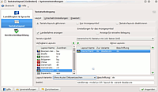
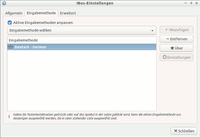

Spracheinstellungen
Zum Verständnis dieses Artikels sind folgende Seiten hilfreich:
Es ist denkbar einfach, ein deutschsprachiges System zu erhalten. Während der Installation wird man gefragt, ob man zusätzliche Sprachpakete aus dem Internet herunterladen will. Dies funktioniert natürlich nur, wenn während der Installation bereits eine Internetverbindung besteht. Bestätigt man die Frage mit "Ja", beginnt die Installationsroutine mit dem Laden und der (automatischen) Installation der deutschen Sprachpakete. Geht alles gut, hat man nach einem Neustart ein deutschsprachiges System.
Wird Ubuntu ohne Internetverbindung installiert, erhält man in der Regel ein englischsprachiges System. Dieses kann zwar nachträglich umgestellt werden, sobald eine Internetverbindung hergestellt wurde. Allerdings muss man dann den entsprechenden Menüpunkt erstmal finden, denn statt "Systemeinstellungen -> Sprachen" lautet dieser z.B. "Preferences -> Language Support". Siehe auch Manuelle Installation weiter unten.
Sprachpakete¶
Automatische Installation¶
Unity/GNOME 3¶
Man kann mit Hilfe der Systemeinstellungen die Sprachpakete installieren:
"Systemeinstellungen -> Sprachen"
Über die Schaltfläche "Sprachen hinzufügen/entfernen..." kann man neue Sprachen hinzufügen oder Sprachen entfernen. In der oberen Auswahlliste kann man seine vorhandenen Sprachen ordnen. Die Sprache, welche ganz oben steht, ist die Standardsprache. Ist diese Sprache in einem Programm nicht verfügbar, wird das Programm in der Sprache wiedergegeben, die als zweite angegeben ist.
Möchte man die ausgewählte Sprache auch im Start- und Anmeldebildschirm benutzten, muss man auf die Schaltfläche "Systemweit anwenden" klicken und das Administrator-Kennwort eingeben.
KDE¶
Unter KDE kann eine fehlende Sprachunterstützung über die KDE Systemeinstellungen nachinstalliert werden. Hier öffnet man das Modul "Land/Region & Sprache". Alternativ kann dieses Modul auch direkt über KRunner durch die Eingabe des Begriffes gestartet werden. Dabei genügen schon wenige Buchstaben, um das Modul zu finden.
Über die Schaltfläche "Install New Language" kann eine neue Sprache installiert werden. Anschließend kann diese in der Liste "Sprachen" für KDE ausgewählt werden. Über die Schaltfläche "Select System Language" kann zusätzlich die Systemsprache konfiguriert werden. Im Modul "Tastaturlayout" kann man noch die deutsche Tastaturbelegung auswählen.
In aktuellen Versionen von KDE findet man die Einstellungen zur Tastaturbelegung unter
"Eingabegeräte -> Tastatur -> Karteikarte "Belegungen" -> Belegungen einrichten -> Belegung hinzufügen"
Xfce¶
Unter Xfce können die Sprachpaketeje nach Xubuntuversion im  Anwendungsmenü unter:
Anwendungsmenü unter:
"System -> Sprachunterstützung" oder
"Einstellungen -> Sprachen"
installiert werden. Dort wählt man als zu unterstützende Sprache sowie als Standardsprache "German" (Deutsch) - die nötigen Sprachpakete werden automatisch installiert.
LXDE¶
Unter LXDE können die Sprachpakete unter
"Einstellungen -> Sprachunterstützung"
installiert werden. Dort wählt man als zu unterstützende Sprache sowie als Standardsprache "German" (Deutsch) - die nötigen Sprachpakete werden automatisch installiert.
Manuelle Installation¶
Kommt es bei der automatischen Einrichtung zu Fehlern, verläuft der Umstieg auf eine neuere Ubuntu-Version ("upgrade") nicht sauber oder hatte man während der Installation noch keine Internetverbindung, so kann man die Sprachpakete nachinstallieren [1]. Benötigt wird folgendes Paket (mit den damit verbundenen Abhängigkeiten):
language-pack-de
 mit apturl
mit apturl
Paketliste zum Kopieren:
sudo apt-get install language-pack-de
sudo aptitude install language-pack-de
Je nachdem, welche grafische Oberfläche man verwendet (GNOME, KDE, usw.) bzw. von welchem Projekt die verwendeten Programme stammen, muss man zusätzlich folgende Pakete installieren. Nach der Installation der Pakete muss die deutsche Sprache noch als Standard eingestellt werden.
Danach sollten die meisten Programme in deutsch verfügbar sein. Für einige Programme gibt es leider noch keine deutsche Übersetzung. Daher sind auch zusätzlich noch die englischen Sprachpakete installiert. Wer bei der Übersetzung helfen möchte, kann sich beim GNOME-Projekt bzw. beim KDE-Projekt oder auf der Homepage des jeweiligen Programmes informieren.
GTK¶
Bei auf der Grafikbibliothek GTK basierenden Desktop-Umgebungen (Unity, GNOME, Xfce, LXDE, MATE) installiert man folgende Pakete:
language-selector-gnome
language-pack-gnome-de
gksu
mit apturl
Paketliste zum Kopieren:
sudo apt-get install language-selector-gnome language-pack-gnome-de gksu
sudo aptitude install language-selector-gnome language-pack-gnome-de gksu
Dann ruft man folgendes Programm mit Root-Rechten auf:
gksudo gnome-language-selector
Nach der Auswahl der gewünschten Sprache und Regionaleinstellungen das System neu starten.
GNOME¶
Nach der Installation [1] die Standardsprache bei der Anmeldung im Displaymanager (also dort, wo man Benutzernamen und Passwort eingeben muss) einstellen. Ab Ubuntu 11.10 wird LightDM statt GDM verwendet. Die Standardsprache kann man weiterhin bei der Anmeldung einstellen. Alternativ kann man in den Systemeinstellungen unter:
"Systemeinstellungen -> Sprachen"
die Sprache auswählen und durch die Schaltfläche "Systemweit anwenden" als Standardsprache festlegen.
KDE¶
Für KDE-Programme:
kde-l10n-de (universe)
k3b-i18n (universe, für K3b)
language-pack-kde-de (universe)
mit apturl
Paketliste zum Kopieren:
sudo apt-get install kde-l10n-de k3b-i18n language-pack-kde-de
sudo aptitude install kde-l10n-de k3b-i18n language-pack-kde-de
Danach in den Systemeinstellungen: "Erweitert -> Anmeldungsmanager -> General -> Sprache -> Deutsch (de)" auswählen und wie oben beschrieben die Sprache für KDE festlegen.
KDE-Software unter GNOME¶
Wenn man KDE-Programme unter GNOME nutzt, dann ist es evtl. erforderlich, nach der Installation der Sprachpakete (s.o.) die Sprache für die KDE-Programme umzustellen. Dazu muss man das Paket
systemsettings (universe)
mit apturl
Paketliste zum Kopieren:
sudo apt-get install systemsettings
sudo aptitude install systemsettings
installieren [1], falls dies noch nicht im Zusammenhang mit einer anderen Installation geschehen ist. Nun öffnet man ein Terminal [2] und gibt dort folgenden Befehl ein:
systemsettings
Nun öffnet sich das KDE-Kontrollzentrum. Hier klickt man nun bei englischer (deutscher) Beschriftung im Abschnitt "Personal" ("Persönliches") auf "Regional & Language" ("Land/Region & Sprache"). Im erscheinenden Fenster rechts unten auf "Select System Language" ("Systemsprache auswählen") klicken und dort "German (Germany)" ("Deutsch (Deutschland)") auswählen. Anschließend klickt man jeweils auf die Bestätigungsknöpfe (die mit den Haken), um die Einstellung zu übernehmen. Evtl. ist nun noch ein Neustart der grafischen Oberfläche nötig.
Tastatur¶
Hinweis:
Benutzer, die bisher nur unter Windows gearbeitet haben, sind es oftmals gewohnt, Sonderzeichen wie beispielsweise das Zeichen "@" über die Tastenkombination Strg + Alt + Q zu erzeugen. Dies ist eine Eigenart von Windows. Unter Linux geht dies mit Alt Gr + Q . Man benutzt also "nur" die rechte AltGr-Taste.
Eventuell ist nach der Installation auch die Tastatureinstellung nicht korrekt. Dies bemerkt man z.B. daran, dass die Zeichen "<", ">" oder "|" nicht eingegeben werden könnnen. In diesem Fall muss die Tastatur noch korrekt angegeben werden.
Unity/GNOME 3¶
Das Tastaturlayout kann unter
"Systemeinstellungen -> Tasten"
eingestellt werden. Wenn man nun auf die Schaltfläche "+" klickt, kann man ein neues Tastenlayout hinzufügen, welches man sich durch die Schaltfläche "Vorschau" anzeigen lassen kann. Die deutsche Belegung heißt "german", bzw. "Deutsch". Unter Ubuntu 13.10 findet sich das entsprechende Menü unter
"Systemeinstellungen -> Texteingabe"
Auf der Übersichtsseite kann man sich durch die Schaltfläche, die aussieht wie eine Tastatur, die gewählten Layouts nochmal anschauen. Diese Vorschau reagiert in Echtzeit, d.h. es wird gezeigt welches Zeichen bei welchem Tastendruck erzeugt wird.
KDE¶
 Im Menü
"Systemeinstellungen -> Eingabegeräte -> Tastaturlayout"
unter dem Punkt "Hardware" wählt man das Tastaturmodell "Generic 105-key (Intl) PC" aus und richtet im Reiter "Tastaturtyp" die Belegung ein.
In aktuellen KDE Versionen findet man die Einstellungen zur Tastaturbelegung unter
"Systemeinstellungen -> Eingabegeräte -> Tastatur -> Belegungen"
Hier aktiviert man den Haken bei Belegungen einrichten und dann kann man beliebig viele Belegungen in der Liste darunter hinzufügen.
Xfce¶
In dem Anwendungsmenü, je nach Version, unter:
"Einstellungen -> Einstellungen -> Tastatur",
"Applications -> Einstellungen -> Tastatureinstellungen"
unter dem Punkt "Layouts" bzw. "Tastaturbelegung" kann man die Konfigurationseinstellungen ändern. Üblicherweise übernimmt Xfce die Einstellungen des Xservers. Sollte man ein anderes Tastaturlayout nutzen wollen, so kann man die Option "Use X configuration" deaktivieren und eigene Einstellungen wählen, üblicherweise als "Generic 105-key (Intl) PC" und "de" sowie "nodeadkeys" als Variante.

LXDE¶
Seit Ubuntu 11.04 ist das Programm lxkeymap vorhanden, mit dem sich die Tastatursprache bzw. die -belegung bequem grafisch ändern lässt. Unter Lubuntu ist es im Menü unter "Einstellungen -> Lxkeymap" zu finden. Seit Lubuntu 13.10 ist zur Tastaturkonfiguration das Panel-Plugin Keyboard Layout Handler  vorgesehen, das das bisher genutzte LXKeymap ersetzt. Siehe auch LXDE Einstellungen.
vorgesehen, das das bisher genutzte LXKeymap ersetzt. Siehe auch LXDE Einstellungen.
Kommandozeile¶
Eine weitere Möglichkeit ist die Konfiguration über den XServer – die Grundlage aller grafischen Aktivitäten. Dazu bearbeitet (oder erstellt) man die Datei /etc/X11/xorg.conf mit Root-Rechten und fügt folgendes ein:
Section "InputClass"
Identifier "keyboard"
MatchIsKeyboard "yes"
Option "XkbLayout" "de"
Option "XkbVariant" "nodeadkeys"
EndSectionNach dem Speichern der Datei erfolgt ein Neustart.
Virtuelle Konsole und initrd¶
Falls in der virtuellen Konsole oder der initrd (z.B. bei Passworteingabe für LUKS) das falsche Tastaturlayout verwendet wird, kann man es mit dem folgendem Befehl umstellen:
sudo dpkg-reconfigure keyboard-configuration
Hier wählt man das Tastaturmodell (z.B. "Generische PC-Tastatur mit 105 Tasten (Intl)"), die Belegung (z.B. "Deutsch") und die Variante (z.B. "Deutsch (ohne Akzenttasten)"). Die restlichen Einstellungen kann man für gewöhnlich auf der Voreinstellung lassen.
Die Änderungen werden nach einem Neustart wirksam.
Änderung der Kodierung¶
Achtung!
Zur Vorsicht sollte die Veränderung der Einstellungen außerhalb vom Fenstermanager (KDE/GNOME) gemacht werden, d.h. in der Konsole. Dazu meldet man sich vor der Änderung von der grafischen Oberfläche ab und erst anschließend wieder an.
Ubuntu benutzt als Grundzeichensatz utf-8 als Kodierung. Man hat jedoch die Möglichkeit, die Kodierung in wenigen, einfachen Schritten zu ändern. Hier wird als Beispiel auf den Zeichensatz de_DE.ISO-8859-15@euro umgestellt.
Systemweite Änderung¶
Zunächst muss sichergestellt sein, dass die zukünftig gewünschte Kodierung auf dem System vorhanden ist. Dies geschieht mit folgendem Befehl:
sudo locale-gen de_DE@euro
Es können auch andere oder mehrere Kodierungen angegeben werden. Eine Liste der möglichen Angaben ist in der Datei /usr/share/i18n/SUPPORTED enthalten. Die erste Spalte beschreibt dabei den Schlüssel, welcher in obigem Befehl angegeben werden muss. Die zweite Spalte definiert die genaue Kodierung.
Abschließend muss die systemweite Festlegung in den Dateien /etc/environment und /etc/default/locale an der Variable LANG, also LANG="de_DE.ISO-8859-15@euro" vorgenommen werden. Letztere Datei braucht nur dann angepasst zu werden, wenn sie vorhanden ist. Mögliche Werte lassen sich zuvor mit dem Befehl locale -a erfragen. Zum Bearbeiten der Dateien müssen diese mit Root-Rechten in einem Editor [3] geöffnet werden.
Die Änderung wirkt sich erst nach einer Neuanmeldung aus.
Benutzerspezifische Änderung¶
Wenn ein Benutzer eine andere Kodierung benötigt als systemweit eingerichtet, ist dies in der Datei ~/.profile anzugeben [3]:
export LANG=de_DE@euro
Nach dem nächsten Anmelden wird diese Einstellung dann übernommen. Der Befehl locale sollte etwas in dieser Art ausgeben:
LANG=de_DE@euro LC_CTYPE="de_DE@euro" LC_NUMERIC="de_DE@euro" LC_TIME="de_DE@euro" LC_COLLATE="de_DE@euro" LC_MONETARY="de_DE@euro" LC_MESSAGES="de_DE@euro" LC_PAPER="de_DE@euro" LC_NAME="de_DE@euro" LC_ADDRESS="de_DE@euro" LC_TELEPHONE="de_DE@euro" LC_MEASUREMENT="de_DE@euro" LC_IDENTIFICATION="de_DE@euro" LC_ALL=
Zeichensatz in der virtuellen Konsole (tty 1-6)¶
Es kann passieren, dass im Textmodus (also außerhalb eines grafischen Systems direkt am Terminal) Sonderzeichen und Umlaute falsch dargestellt werden. In diesem Fall ist es wahrscheinlich, dass der falsche Zeichensatz eingestellt ist. Dies kann man überprüfen, indem man an der Kommandozeile eingibt:
grep CODESET /etc/default/console-setup
Wenn man eine andere Ausgabe erhält als
CODESET="Uni2"
ist ein falscher Zeichensatz aktiviert. Den richtigen Zeichensatz kann man mit folgendem Befehl einstellen:
sudo dpkg-reconfigure console-setup
Mit diesem Befehl wird die virtuelle Konsole neu eingerichtet. Man kann nun überall die Standardeinstellungen übernehmen, bis man nach dem Zeichensatz gefragt wird. Hier muss man nun "Latin1 und Latin5 - westeuropäische und türkische Sprachen" oder ". Kombiniert - Latein, slawisches Kyrillisch, Griechisch" (Standard seit Ubuntu 11.04) auswählen. Nach einem Neustart des Rechners sollte die virtuelle Konsole problemlos die deutschen Umlaute darstellen.
Problembehebung¶
Schriften entfernen¶
Mit Hilfe des Programms
localepurge (universe)
mit apturl
Paketliste zum Kopieren:
sudo apt-get install localepurge
sudo aptitude install localepurge
lassen sich unerwünschte oder überflüssige Sprachpakete entfernen. Allerdings sollte man bei der Benutzung unbedingt darauf achten, niemals die englischen Sprachdateien zu entfernen.
Achtung!
Die Verwendung von localepurge kann u.U. zu Problemen mit der Paketverwaltung führen!
Warnung bei der Systemaktualisierung¶
Gibt es Warnungen bei einem "update-initramfs", ausgelöst von einem automatischen oder manuellen Vorgang, bei dem ausgegeben wurde:
"Warning: No Support for locale: de_DE.utf8"
oder einem anderen Eintrag zu LOCALE, so sollte man die folgenden Befehle in einem Terminal [2] eingeben:
sudo dpkg-reconfigure locales
das ergibt eine Liste der verfügbaren LOCALE, gefolgt von der Eingabe:
sudo update-locale LANG=de_DE.UTF-8
oder eine andere Auswahl aus obiger Liste. Danach kann oder sollte man die Zuordnung der Verzeichnisse bzw. Dateien mit:
sudo locale-gen --purge --no-archive
neu organisieren. Eine Überprüfung erfolgt mit der Eingabe von:
sudo update-initramfs -u -k all
Weitergehende Hinweise siehe auch Systemweite Änderung sowie in den Manpages von locale-gen.
Tastaturbelegung wechselt bei Neustart zu "US" (ab Ubuntu 14.04)¶
Das Problem lässt sich mit Hilfe von Dconf-Editor beheben. Nach Installation und Start im Terminal mit dconf-editor setzt man nur noch das Häkchen unter:
"desktop" → "ibus" → "general" → "use-system-keyboard-layout"
- Erstellt mit Inyoka
-
 2004 – 2017 ubuntuusers.de • Einige Rechte vorbehalten
2004 – 2017 ubuntuusers.de • Einige Rechte vorbehalten
Lizenz • Kontakt • Datenschutz • Impressum • Serverstatus -
Serverhousing gespendet von